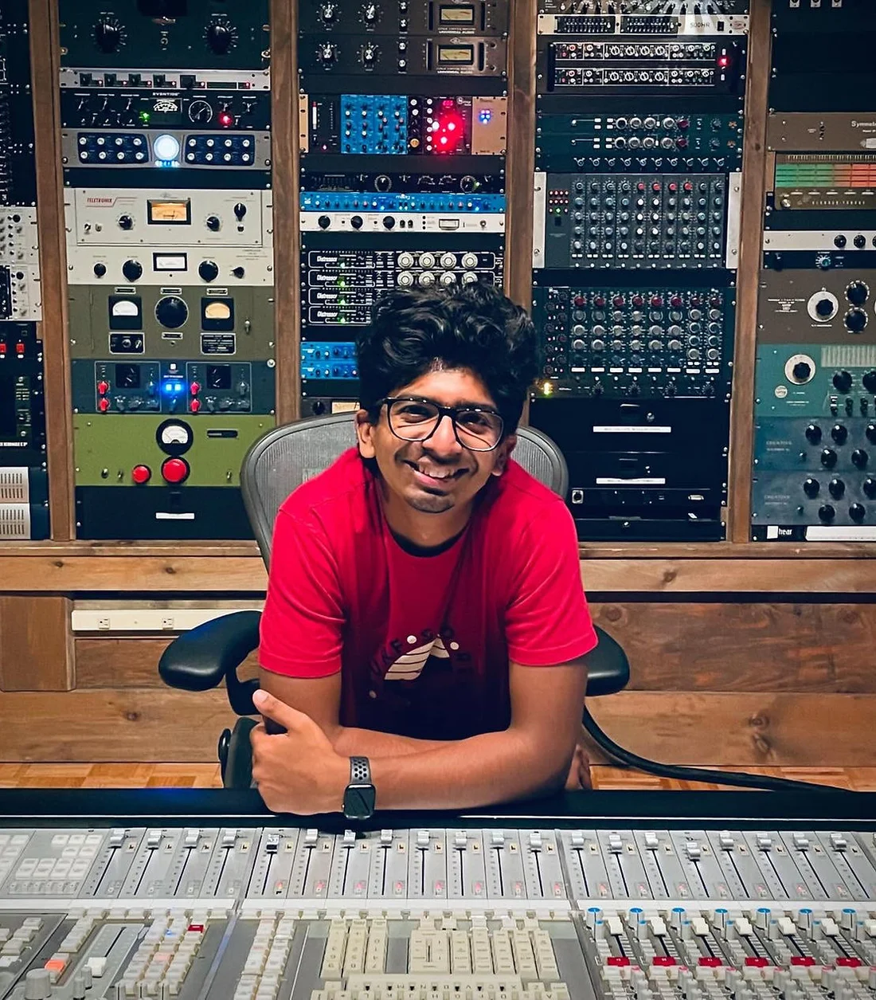
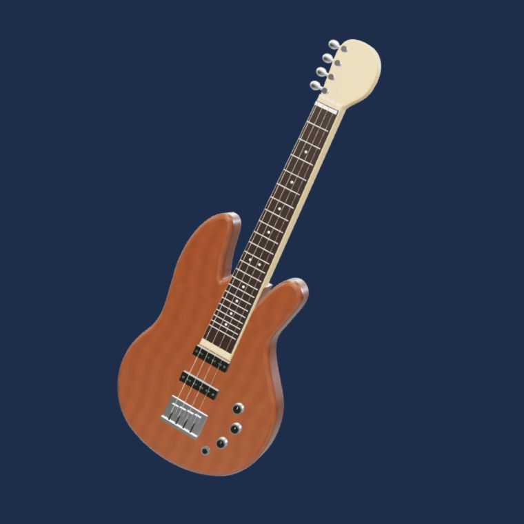

Musicianship
Bass guitar on independent releases, including Pills and Azad Panchi.

Joel Bobby is a bassist, record producer, and studio & live engineer working across music and sound.
His work connects independent music in India with recording studios and live spaces in New York. On releases by Joash Mathew and Roohani, that means playing bass as well as shaping the recording.
At Studio G and NYU’s Brooklyn venues, his credits range from assistant engineering to live mixing and technical production.
Joel on LinkedInBass guitar is part of Joel’s work on Pills and Azad Panchi. Playing and producing meet in the same place: the recording.
Hear the recordsAn interactive study of a four-string bass.

Playing, recording, and listening
inform the same work.
Bass guitar on independent releases, including Pills and Azad Panchi.
From remote collaborations to studio sessions. Production, recording, and mixing with the artist’s work at the center.
Front-of-house, technical production, and live recording across venues in Pune, Mumbai, and Brooklyn.
Joel’s NYU work includes a live ensemble recording presented at the 2025 Music Technology Open House and a networked performance connecting musicians across institutions.
Clear Water · NYU Open House Network Arts · April 2025A record, a live set, or an idea. Let’s talk.